特色升学班
孵化类(项目班)
无人机专业前景广阔，人才缺口大，可从事设计、制造等多领域工作；计算机新媒体运营类、电子商务、电子竞技及动漫设计专业，随着互联网发展需求增大，就业机会多;汽修专业因汽车保有量增加及技术进步，就业稳定且需提升技能。
司法类
培养具有司法警察业务的基本知识和技能，通过这一综合培养方案，学生将具备扎实的法律与警务基础，同时掌握先进的无人机技术/计算机应用/汽修能力，成为适应现代司法警务需求的应用型人才。能够胜任人法院、人民检察院司法警务岗位、监狱和劳动教养一线工作岗位，从事司法警察业务的高素质技能型人才。
- 德阳警院: 四川司法警官职业学院
- 泸州警校: 四川警察学院
升学方向:
国防类
国防类就业前景广阔，岗位选择多样。毕业生可投身军队、政府机关，参与国防科研、政策制定等工作，享受稳定薪资待遇与福利保障。同时，随着国防现代化推进，对专业高素质人才需求大增，尤其在计算机、无人机技术等新兴领域的快速发展，为国防类专业人才提供了更多的发展机遇。
特色类
钻探技术(石油类)毕业生可在油田相关企业从事钻井、固井等工程工作，长期稳定。随着航空业发展，对飞机维修人才需求大，毕业生可在航空公司等单位从事飞机机体及系统维护等工作。畜牧兽医(宠物医学、宠物美容):就业领域广泛，可在宠物医院等从事诊疗、美容工作，也可自主创业，市场需求大。
| 报读类别 | 招生计划 | 学 制 | 专业方向 | 学费(元) | 军训(元) | 服装(元) | 合计(元) |
|---|---|---|---|---|---|---|---|
| 普通专业班 | 200 | 3年 | 计算机应用、幼儿保育、财务会计、旅游管理、园林技术、药品管理 | 5800 | 900 | 1200 | 7900 |
| 航空服务方向、高铁乘务方向、城市轨道交通方向、铁道车辆检测与维修 | 6800 | 900 | 1200 | 8900 | |||
| 升学专业班 | 200 | 3年 | 计算机应用(软件工程、物联网技术、新媒体运营、数字媒体、大数据、网络技术、人工智能技术、动漫设计、广告设计、艺术设计、电子商务)、幼儿教育、新能源汽车、互联网金融(财务类)、电子技术应用(机电技术、智能制造、智能控制、电子技术、机器人与智能) | 8800 | 900 | 1200 | 10900 |
| 特色升学班 | 200 | 3年 | 孵化类(项目班): 无人机、计算机(新媒体运营类、电子商务、电子竞技及动漫设计)、汽修 | 9800 | 900 | 1200 | 11900 |
| 国防类: 无人机类、汽修类、计算机类专业方向 | 9800 | 900 | 1200 | 11900 | |||
| 司法类: 无人机类、计算机类专业方向 | 9800 | 900 | 1200 | 11900 | |||
| 特色类: 钻探技术(石油类)、飞机维修、畜牧兽医(宠物医学、宠物美容) | 10800 | 900 | 1200 | 12900 | |||
| 高考升学班 | 200 | 3年 | 普通高考班、职教高考班 | 10800 | 900 | 1200 | 12900 |
| 本科升学班 | 200 | 3年 | 普高本科冲刺班、普高艺体本科班 | 10800 | 900 | 1200 | 12900 |
| 定制班 | 200 | 3年 | 华勤定制班(机电类、计算机类) | 9800(企业垫付5000) | 4800 | ||
| 郑重承诺: |
1. 凡是满足本科签约班条件的学生，学校承诺三年以后考试成绩达到本科调档线，若三年后成绩未达到本科调档线的学生 ① 可选择留校复读，学校免学费、住宿费，生活费自理; ② 凡自愿放弃复读的学生，学校给予一次性返还学费两万元;中途自愿放弃本科升学或注销学籍的学生除外。 2. 奖励政策: 凡是考上重点本科，学校给予2-10万元的奖学金。 |
||||||
校园一角
- 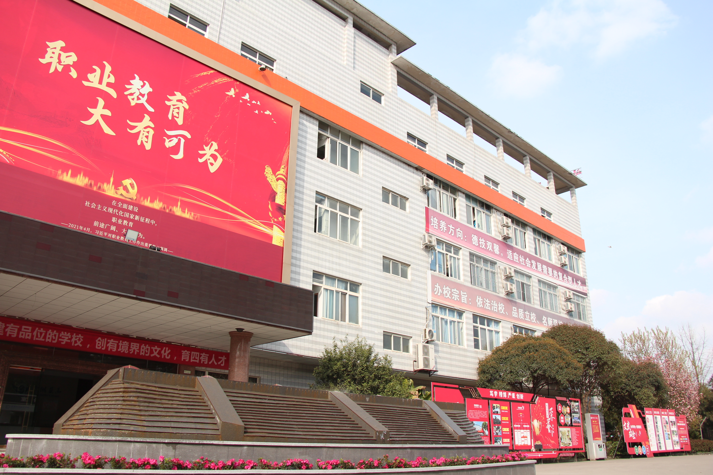
- 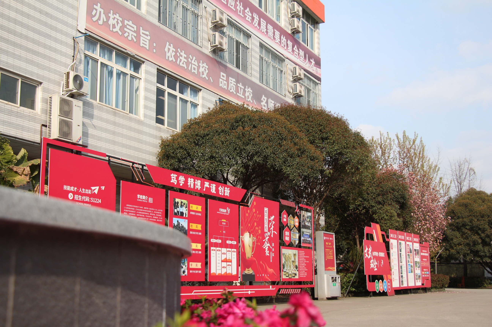
- 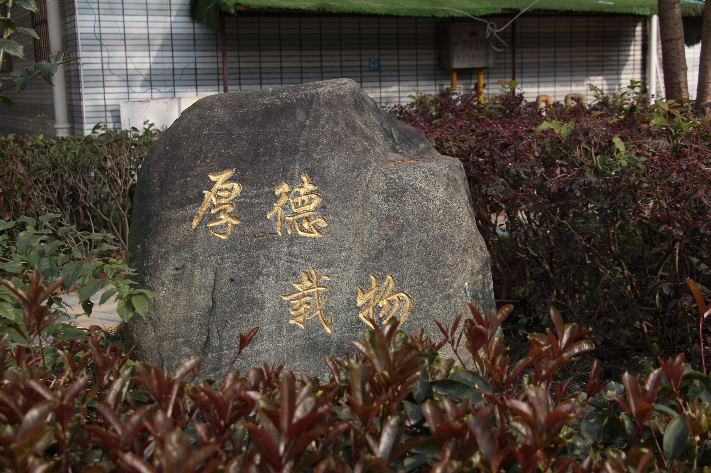
- 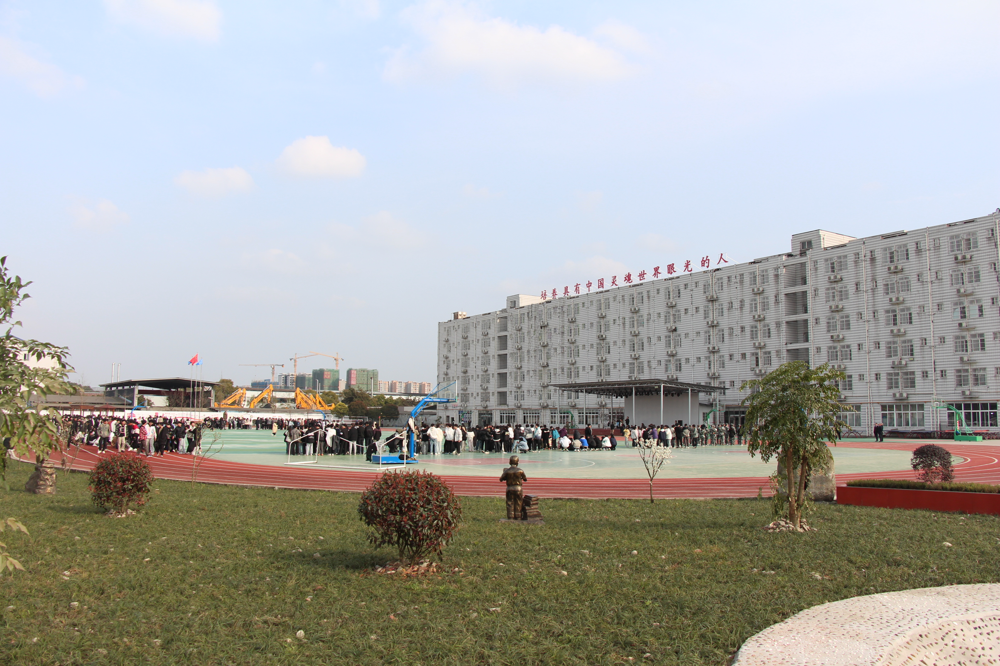
- 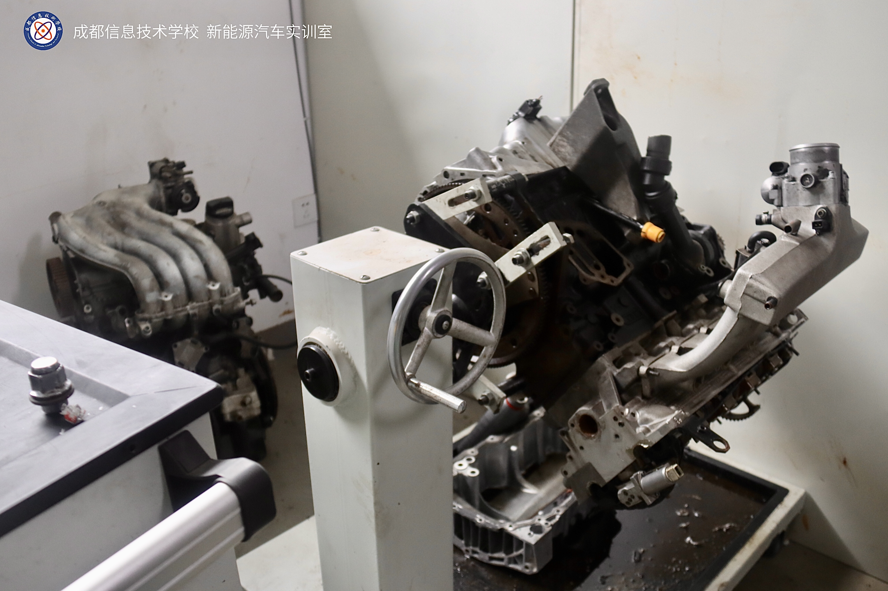


- 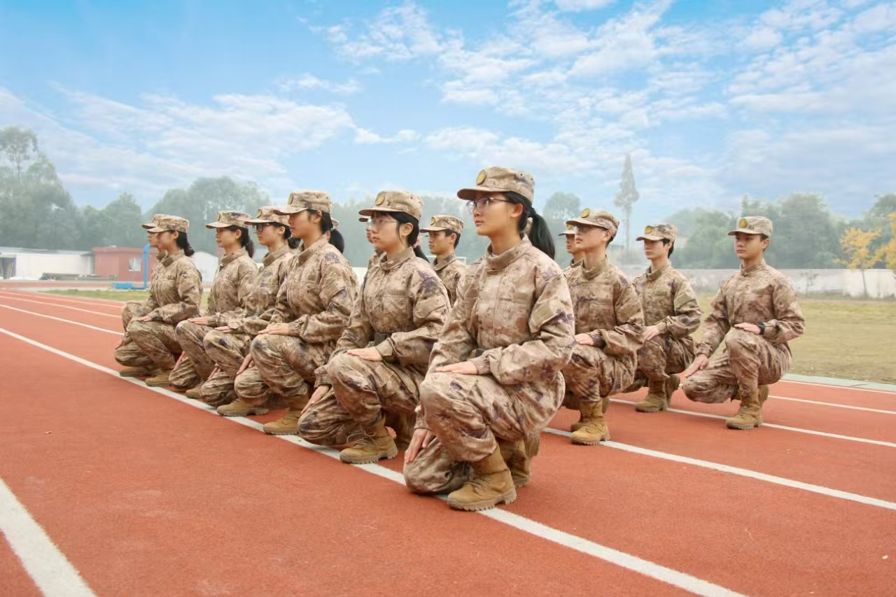
- 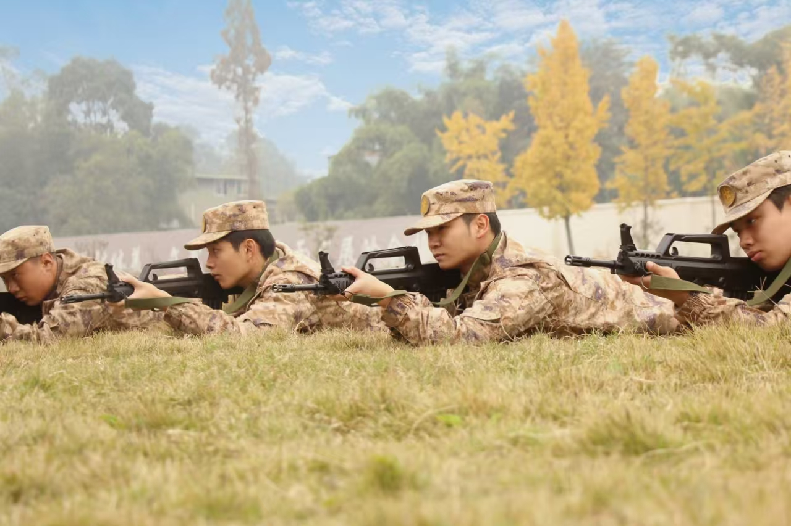
轨道交通专业风采展示
- 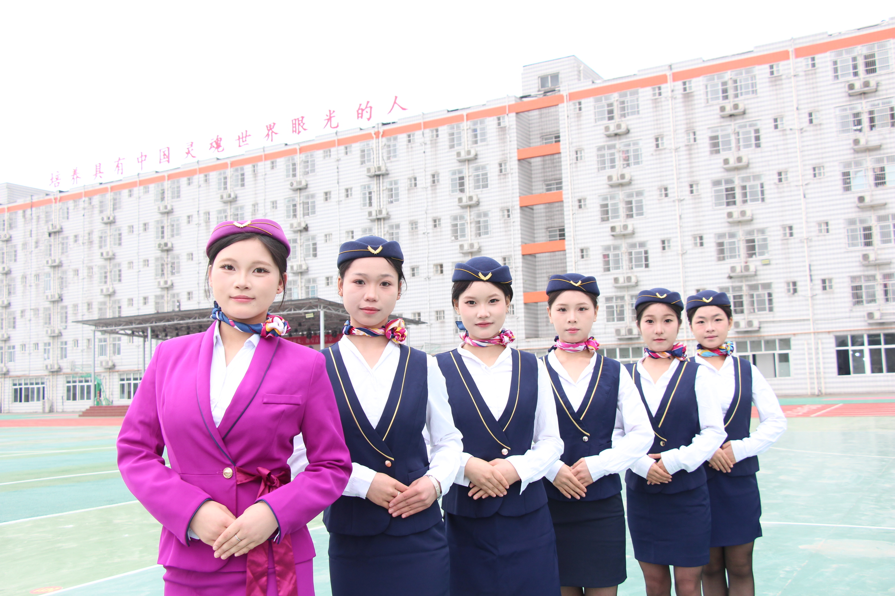

- 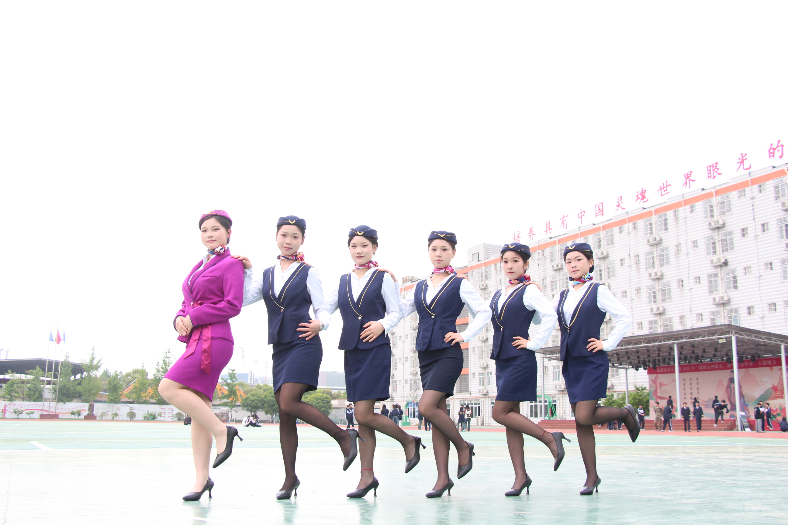
- 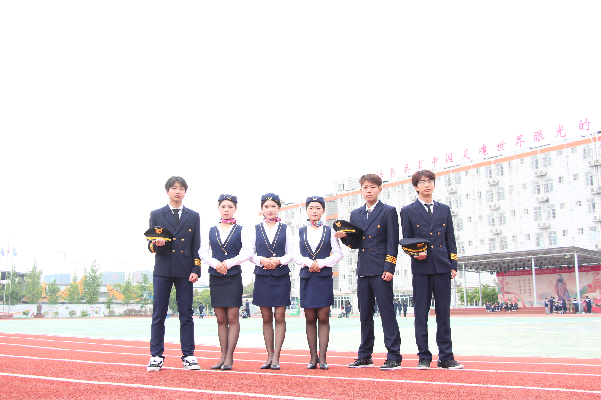
- 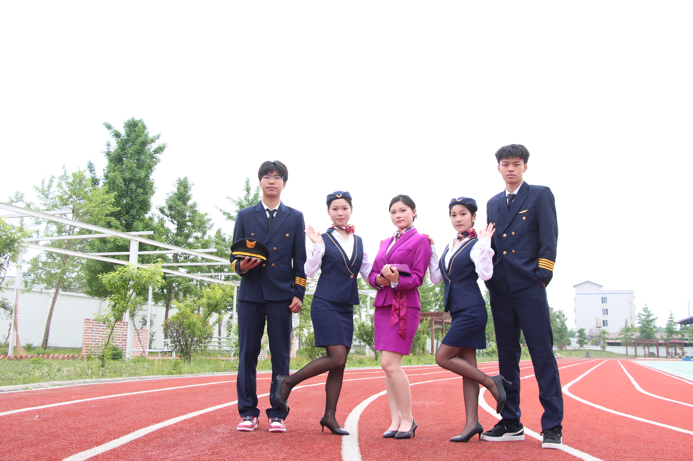
- 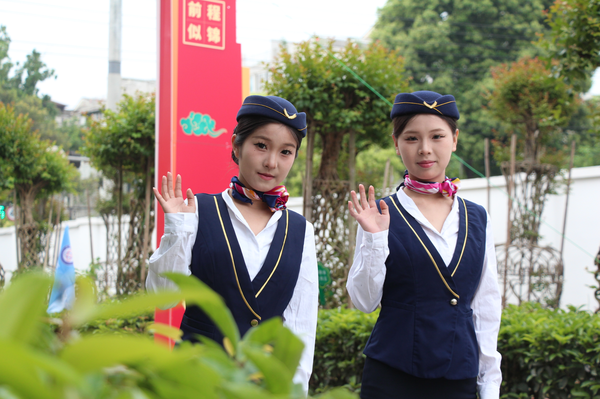
- 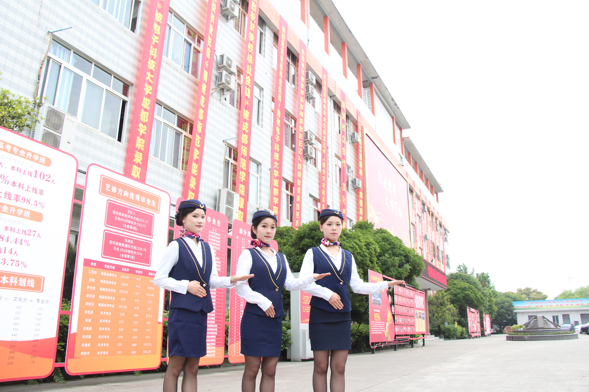
- 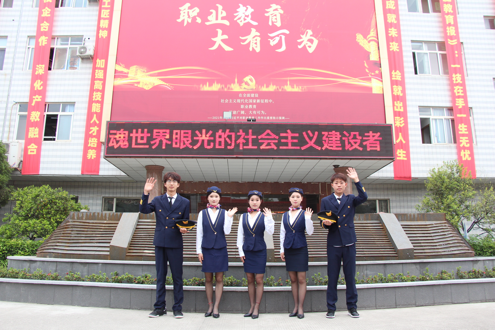
- 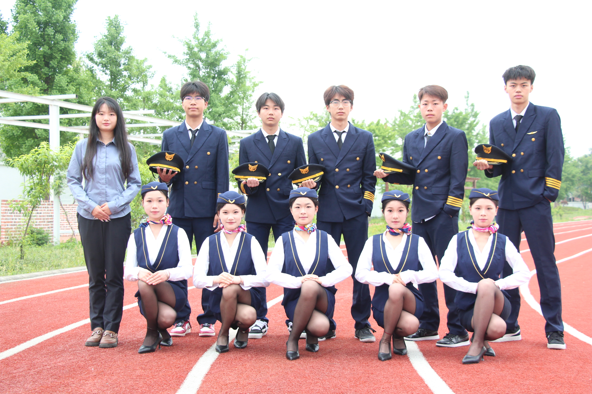
相关政策
传统高考和新高考的区别
传统高考模式
传统高考模式是指以" 3+ 文科综合/理科综合 "为核心的考试制度，主要特点包括文理分科、固定科目组合和统一计分方式。
文史类: 政治、历史、地理 。组成"文综"(总分300分)
理工类: 物理、化学、生物 。组成"理综"(总分300分)
新高考模式
新高考模式是指以" 3+1+2 "为核心的考试制度，主要特点包括科目选择灵活、学科组合多样化和综合素质评价。
"3":全国统考科目
"1":首选科目
"2":再选科目
新高考模式的实施旨在促进学生全面发展，鼓励个性化学习和多元化发展。
新高考模式的实施将对学生的学习方式、升学途径和职业发展产生深远影响。
新高考模式的实施需要学校、教师和家长的共同努力，以确保学生能够适应新的考试制度。
新高考模式的实施将为学生提供更多的选择和机会，帮助他们实现个人发展和职业目标。
新高考模式的实施将促进教育公平和社会进步，为国家的可持续发展提供人才支持。
新高考模式的实施将推动教育改革和创新，为学生提供更好的学习环境和发展空间。
职教高考政策
职教高考（职业教育高考）是区别于普通高考的高等院校招生考试制度，专门面向职业教育学生（如中专、技校、职高毕业生）设计，旨在培养应用型高技能人才。
其核心特点是“文化素质+职业技能”的考试模式，考试科目通常为语文、数学、英语三门文化课及专业技能测试。